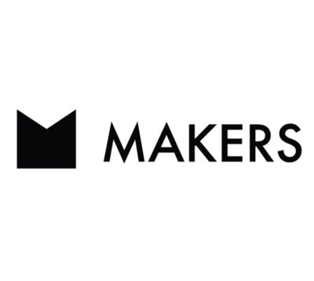

I am a highly motivated software developer recently graduated from Makers Academy, having presviously gained a first class degree in Business Management. My degree gave me a good understanding of business and organisational models, however the potential of digital and tech on multiple sectors interests me the most. I enjoyed demonstrable success as a member my University's marketing team, with responsibility for digital campaigns; teaching myself to code, create media assests, and use web publishing software, resulting in increased traffic and engagement. I gained a lot of satisfaction from the immediate and positive impact I was able to make. I subsequently embarked on building my knowledge of other coding languages. I am looking to secure a junior developer role, where I can contribute to business growth via enhanced user experience, whilst learning and developing new skills.
Solent University | 2018 October - 2019 April
Social Media and Brand Communication
I have gained valuable skills and experience in strategic planning for social media campaigns directed at students. To manage the social media accounts I learnt how to use the Hootsuite platform to schedule daily posts and find relevant topics relating to Solent University activities. Furthermore, I created digital media in the form of images, short videos and gif’s to improve user engagement. Moreover, I was given the responsibility of creating an Instagram Solent alumni instagram account with the purpose of sharing upcoming events and achievements may bypass students. The account now has over 1000 followers and continues to grow. In addition, both the Facebook and Twitter accounts saw a 15% increase in the number of followers. Overall, this experience has been fundamental in growing my interest in digital media and web development.

MAKERS Coding Bootcamp
2020 November - 2021 February
I learned to implement the testing framework Rspec alongside the practice of test-driven development (TDD). This greatly assisted me in the debugging of my projects, as I was able to plan and reflect my code appropriately for testing. I would apply this process later to JavaScript with the testing framework Jasmine. Introduced to the design of the model-view-controller(MVC), enabling me to understand areas in which a web application functions to both the user,the programmer, and in regard to the front and back end. Further new areas of practice applied to databases (SQL), frameworks such as Sinatra, and expanding my coding languages with HTML5 and CSS3.